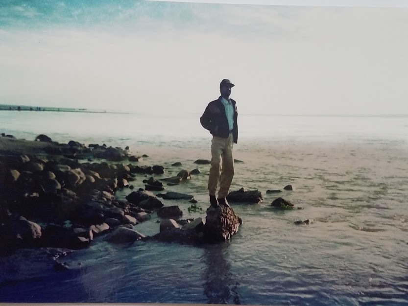
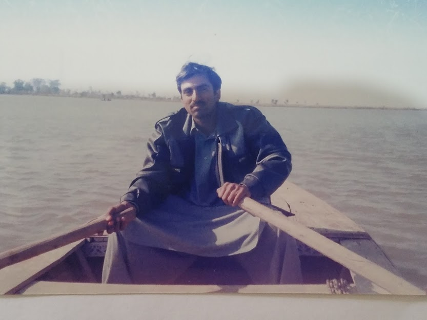
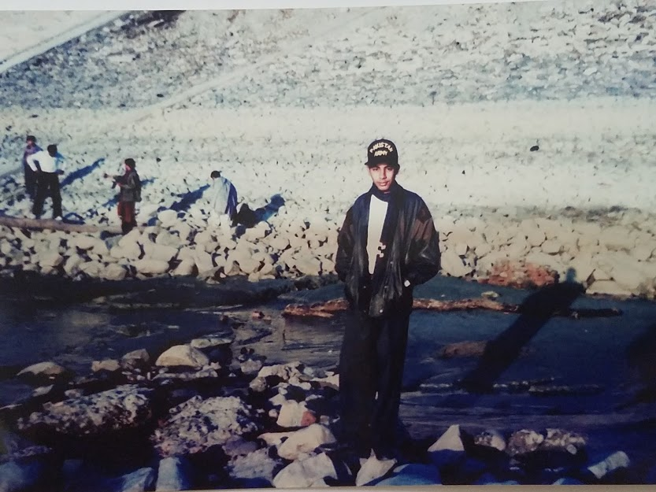
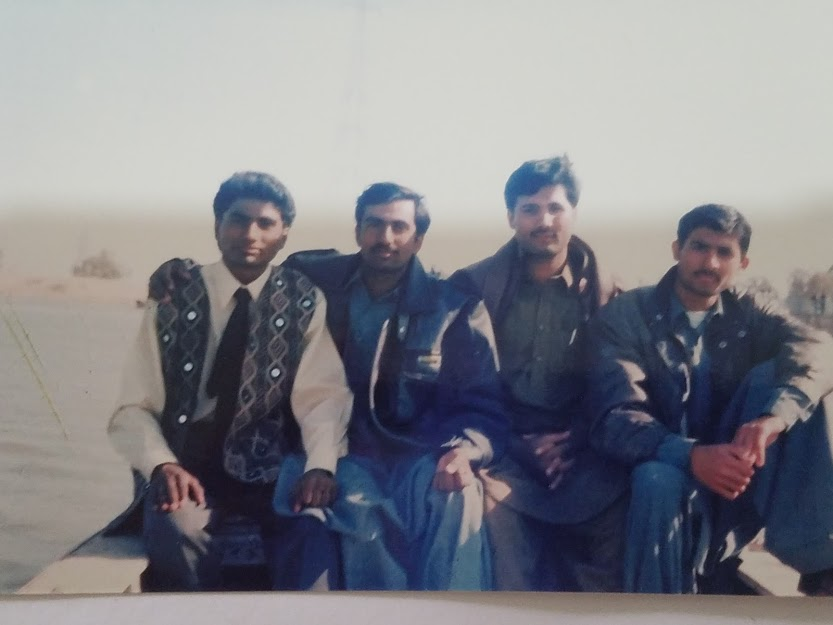
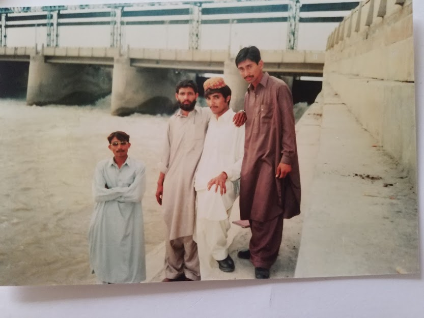
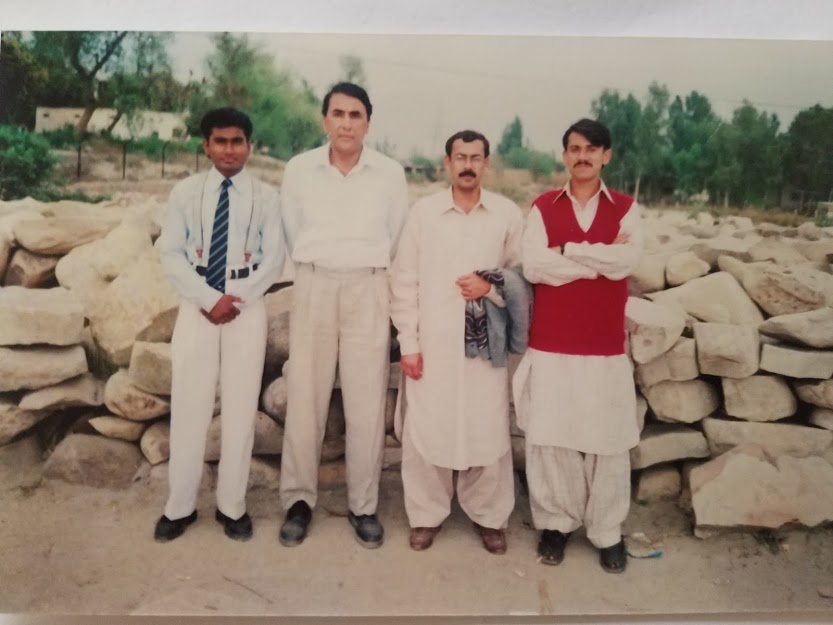
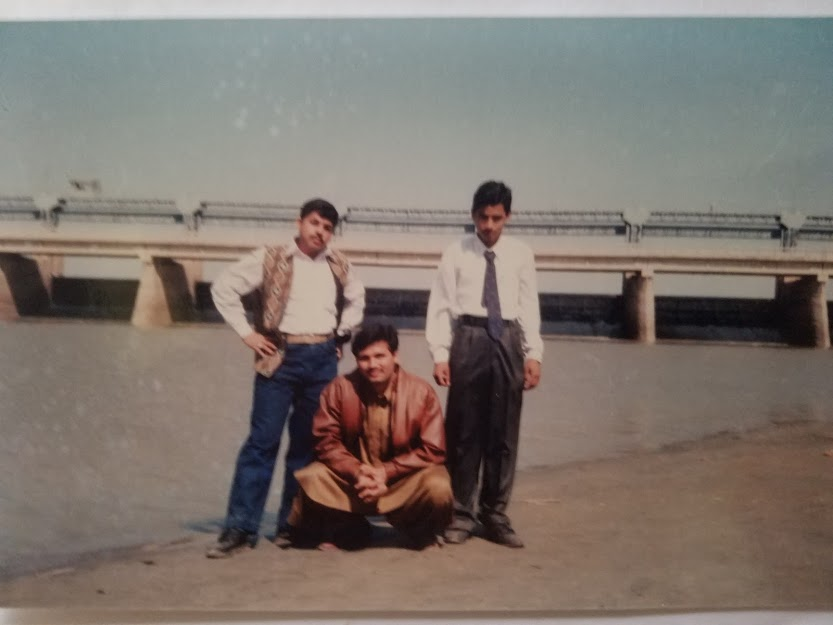
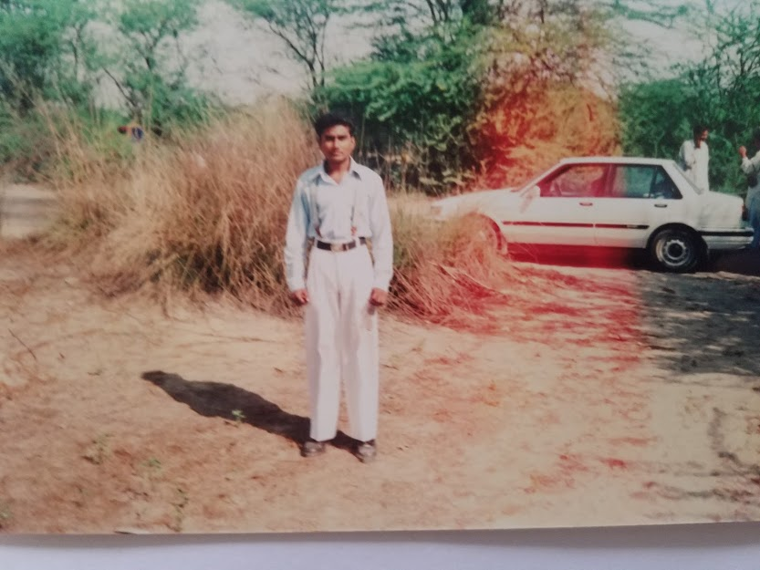
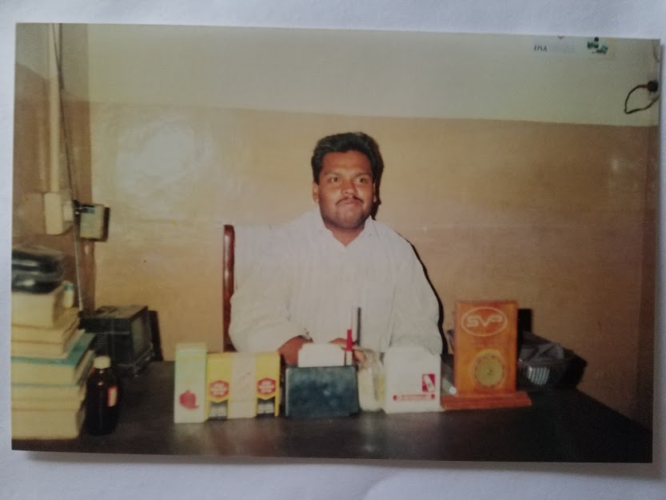

College life is known as one of the most memorable years of one’s life. It is entirely different from school life. College life exposes us to new experiences and things that we were not familiar with earlier. For some people, college life means enjoying life to the fullest and partying hard. While for others,it is time to get serious about their career and study thoroughly for a brighter future.
backCollege life is a person’s golden period of early youth. He remembers it in his whole life. He can never forget it.Functions, tours, and sports are other aspects of college life. They are very happy occasions. They are memorable events of the student’s life. The students enjoy them very much. On these occasions, they take photographs of friends, teachers, and distinguished guests. They also take photographs of attractive scenery.
  A College is dreamland of a student’s academic career. It is a fascinating panorama of enjoyment, freedom, and friendship. Sweet memories and pleasures of college life are simply amazing. The first and the last day, group Of friends, unexpected holidays, functions of Curricular and extracurricular activities, and adventures at hostels make College life the most memorable and unforgettable part of life.
  The most interesting part of College life is the tours and visits to different places. The tours with classmates and college fellows help in understanding each other. Everyone cares about Someone. Group gathering and Spending time with each other make those moments more memorable, These tours also develop the friendship for life.
  In the end, I can say that college life is a beautiful blend of joys and memories. On the whole, every day spent in college is loaded with some colorful events such as freedom, special breaks, matches, and functions. No doubt college life is an ideal part of academic life. Its charms can never fade away.
This Site Created by Dr.Liaquat.Ali 16 May 2021 All Rights Reserved!